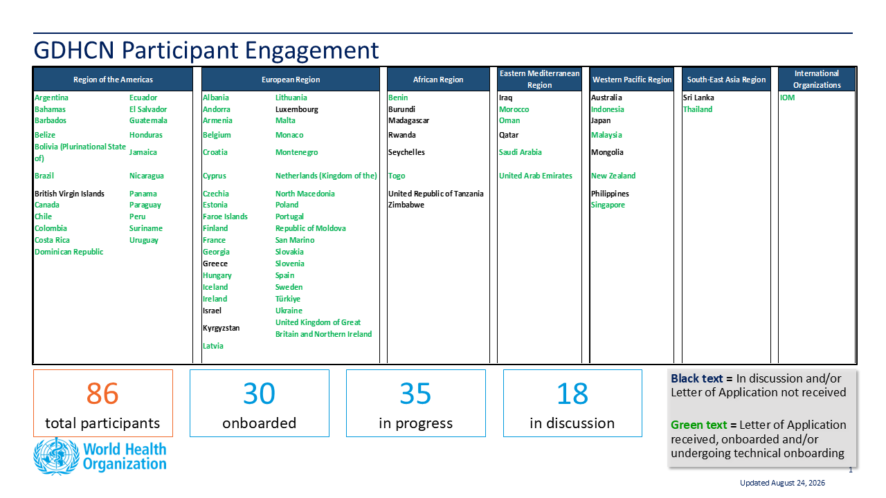

Summary
This guide describes the specifications and on-boarding procedures for WHO's Global Digital Health Certification Network (GDHCN). The GDHCN is a mechanism to support verification of health documents and certifications that are exchanged between participants of the GDHCN. These health certifications may include COVID-19 certificates, routine immunization cards, and home-based records consistent with International Patient Summary standards. This mechanism provides means of harmonizing global health protocol standards and establishing a system for recognition of digital certificates for continuity of care and at point of entry. The GDHCN is designed to leverage existing investments by jurisdictions that were made under the COVID-19 response and provide the digital health infrastructure needed for resiliency in future epidemic and pandemic responses.
The GDHCN is a digital reflection of the trust WHO already has with Member States. The GDHCN is a digital trust network is based on proven concepts which are used to describe the specifications and mechanisms for establishing trust, which allow eligible participants to establish new trust domains for exchange of verifiable digital health records. Eligible participants of the trust network may apply to join by following an on-boarding process. The GDHCN is operated under the GDHCN Administrative and Operational Framework.
Trust Network

Background & Purpose
In response to COVID-19, Governments and organizations across the world have developed and adopted standards and technologies to create, present, and verify digital vaccination and test credentials. However, a global technical framework to enable convenient use and interoperability of these credentials between systems – while also allowing domestic autonomy over their use – does not exist yet and is critically needed.
The WHO Global Digital Health Certification Network is a collection of components that are used to verify interoperable digital health documents or certificates. This system of comprised of three main features:
- A collection of well defined digital health documents that are issued and verified by members of the GDHCN
- A Public Key Infrastructure (PKI) that is used for the publishing and distribution of public keys used for verification of digital signatures of the digital health documents.
- A Knowledge Library used to maintain metadata including terminology codings, product codes and business rules that are used to provide semantic interoperability of these digital health documents
In addition to verifying and validating COVID-19 certificates, a global digital health trust network such as the GDHCN can:
- Establish trust of digitally signed clinical algorithms published by WHO through the SMART Guidelines work.
- Allow for a global product catalogue of trusted medical products and devices.
- Ensure information about a patient can be accessed and trusted regardless of one is in the world.
- Support health systems resiliency to address future outbreaks in a world.
- Empower individuals to manage their own health and well-being.
The interoperable exchange of health information in a trusted environment is a complex task with an increasingly large number of stakeholders (e.g. public health agencies, accredited labs, border control organizations, institutions authorized to verify) that need to ensure that data is transferred safely and securely, that the health content is interoperable, and that information is understandable and actionable. This guide details how to utilize a global technical framework to allow interoperability of health credentials between systems, while preserving domestic autonomy over their use.
Achieving global interoperability of health certificates does not require that all jurisdictions use the same standard. Interoperability can also be achieved when there are pre-arranged mechanisms in place so that certificates issued by one jurisdiction are accepted in another. A number of services and technical artifacts have been developed to address particular criteria for establishing interoperability and a system of trust including:
- Data models, transformations and vocabulary definitions that allow exchange of health data between various standards formats, preserving a jurisdiction's autonomy regarding domestic processes while allowing re-issuance and mutual recognition of credentials between jurisdictions
- Standard specifications for exchanging public keys between various networks for verifying digital signatures on health credentials
- A global trust registry and federated public key infrastructure solution that provides technical interoperability and technical governance between regional trust networks
- Workflows for creating, sharing and executing business rules that evaluate public health policies against health data for cross-border or port of entry requirements
- Open source tools and technical guidance to reduce the burden of implementing the technical infrastructure to participate in the federated trust network, including open source trust network infrastructure for jurisdictions to implement their own regional trust networks
Circular letter to Member States
On Friday, September 29, 2023, WHO’s Director General sent a circular letter to all Member States encouraging participation in the GDHCN.
- C.L.38.2023 (Global Digital Health Certification Network) - Arabic
- C.L.38.2023 (Global Digital Health Certification Network) - Chinese
- C.L.38.2023 (Global Digital Health Certification Network) - English
- C.L.38.2023 (Global Digital Health Certification Network) - French
- C.L.38.2023 (Global Digital Health Certification Network) - Russian
- C.L.38.2023 (Global Digital Health Certification Network) - Spanish
Audience
This guide describes expected workflows for potential actors in a trust ecosystem, namely:
- Issuers that provide verifiable health credentials to individuals,
- Verifiers that consume verifiable health credentials provided by individuals, and
- Trust Networks that establish trust relationships and policies between issuers and verifiers.
The audience for this guide includes decision makers, analysts and technical assets at potential individual issuers, existing trust networks or potential verifiers who may participate in the federated trust network. Stakeholders include Member States, regional networks, and standards development organizations.
Participants
Trust Network Participants

Available Trust Domains
The codes for the GDHCN Trust Domains are contained in the GDHCN Trust Domain Value Set and are described in more detail here.
Ethical Considerations and Data Protection Principles
As with any digital solution, there are ethical considerations, such as potential impacts on equity and on equitable access, and data protection principles that need to inform the design of the technical specifications, as well as provide guidance on how resulting solutions can be ethically implemented. The following page discusses some key ethical considerations and data protection principles that Member States are encouraged to – and, where they have legal obligations, must – include in their respective deployments of digital solutions. These ethical considerations and data protection principles have also informed the design criteria for WHO’s SMART Guidelines and for the utilization of the WHO’s Global Digital Health Certification Network.
Feedback
Feedback specific to this Implementation Guide can provided through:
- Frequently asked questions can be viewed here
- Clicking on one of the Feedbacks link to the right of any section header
- Sending an email to gdhcn-support@who.int
- Creating an issue on GitHub smart-trust repository
Community
Sign up on chat.fhir.org community and follow the stream who-smart-guidelines for questions, queries and chats related to WHO SMART Guidelines
WHO also hosts weekly calls on authoring and implementing WHO SMART Guidelines where participation is welcome. Please send an email at gdhcn-support@who.int in order to get invited.
Disclaimer
The specification herewith documented is for the WHO Gloa demo working specification, and may not be used for any implementation purposes. This draft is provided without warranty of completeness or consistency, and the official publication supersedes this draft. No liability can be inferred from the use or misuse of this specification, or its consequences.